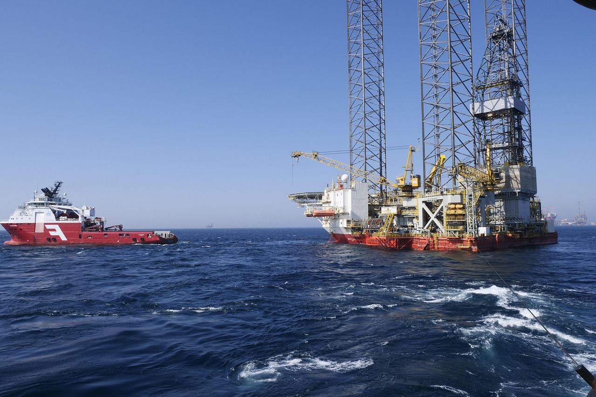

OPINION: New Oil Rig Will Create Problems, not Jobs

An oil rig is set to begin construction this year, and it is predicted to create many jobs and bring in more revenue for the country. It won’t. In fact, we will end up losing money—and possibly lives—because of it.
The oil rig is being constructed off the European-facing coast, and is set to be completed by late 2030. It is expected that Betralund will sell the oil to foreign buyers, and also use it for our own uses. Experts predict that it will create upwards of “500 jobs” and will bring in “$50 million dollars per year” in additional revenue.
I believe that the oil rig will not do what it is intended to do, for three main reasons: cost, maintenance, and danger to human lives.
The oil rig will be extremely expensive to make, since we need to import all of our own materials from outside sources, which multiplies the initial cost. My own estimates indicate that this alone will raise the cost by more than three times. Additionally, most other countries already have their own trade deals for oil, or have their own rigs to drill for oil. Thus, it will be much harder for us to sell our oil to foreign buyers, and every day we use it without selling oil, we will lose millions of dollars.
In addition to cost, the oil rig will be very hard to maintain. An oil rig is an enormous undertaking, and we barely have enough money to build it, let alone maintenance and service it for many years. We don’t have enough knowledgeable people to care for it, and if something breaks, we may have to ship in supplies from outside to fix it. This will increase the cost exponentially.
Besides all this, oil rigs are dangerous. In fact, more than 100 people die every year on these platforms. The deaths are from various reasons, such as storms, fights, or accidents such as fires. While it has been stated that the oil rig will create jobs, I maintain that it will put our workers in danger.
Additionally, the seas around Betralund are notoriously stormy, and this will create an additional danger for our workers living on the rig.
So, in my opinion, the oil rig, while it seems like a good idea, will be too costly, hard-to-maintain, and dangerous to be any benefit to our country.